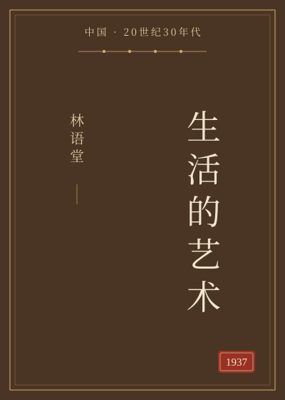
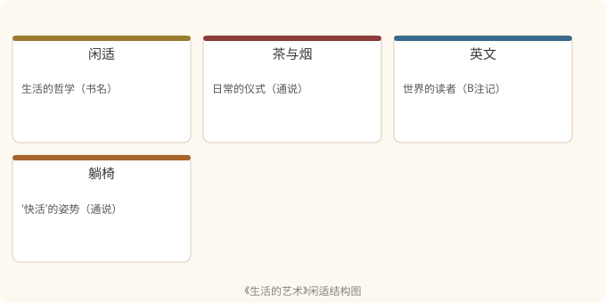

生活的艺术
一、基本信息
| 作者 | 林语堂 |
|---|---|
| 成书/出版 | 1937年（作者页注记：Britannica——生活的艺术 (1937)——'英文中国介绍'） Lin Yutang — Encyclopaedia Britannica（百科全书） |
| 国别/地区 | 中国 |
| 时代 | 近代 · 20世纪30年代 |
| 体裁 | 文化论著 |
| 语言 | 英语 |

《生活的艺术》闲适结构图（主题·结构图）
二、创作背景
作者页注记：生活的艺术 (1937)——'英文中国介绍（Britannica）'（与《吾国与吾民》1935 并列）。
Britannica：林语堂——向西方介绍中国的作家（作者页语境）。
题材（通说待核）：'闲适哲学'——躺椅、茶与烟的'生活的艺术'。
三、内容脉络
（通说待核）'醒觉'与'人类的快乐'诸章。
（通说待核）'闲适'与'玩物'的辩护。
四、主要人物表
| 人物 | 身份 | 说明 |
|---|---|---|
| （文化论著无人物） | —— | 文化随笔 |
五、主题与艺术特点
- '闲适哲学'（通说待核）。
- '英文中国介绍'（B注记）。
- 茶、烟与躺椅的仪式（通说待核）。
六、影响与评论
- Britannica：'英文中国介绍'（作者页注记）。
Lin Yutang — Encyclopaedia Britannica（百科全书） - Britannica：林语堂《吾国与吾民》（作者页交叉）。
Lin Yutang — Encyclopaedia Britannica（百科全书）
七、阅读建议
难点
- 英文的'闲适'语体。
- 中国生活细节的英译。
- 《生活的艺术》（湖南文艺等——通说待核）。
- 1937年Reynal & Hitchcock说待核。
林语堂英文第二作；与《吾国与吾民》对读。
八、待核实
- 1937年出版细节待核。
- 章节结构核对（通说）。
- '美国畅销榜'说（通说）待核。